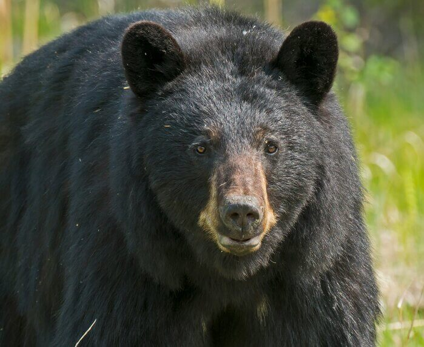
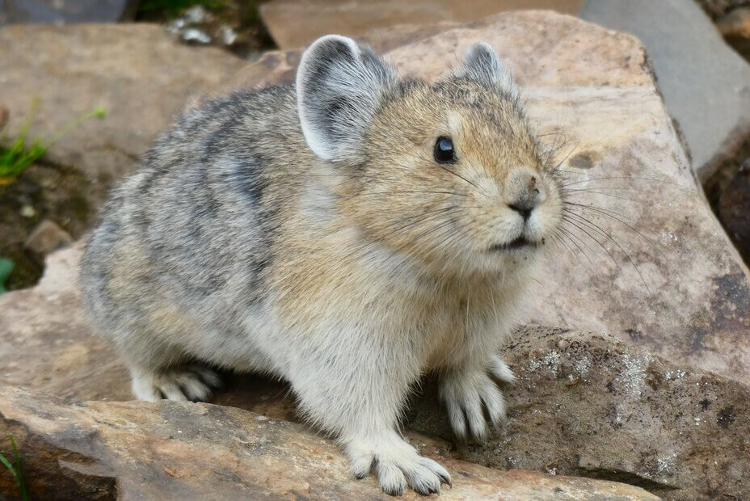
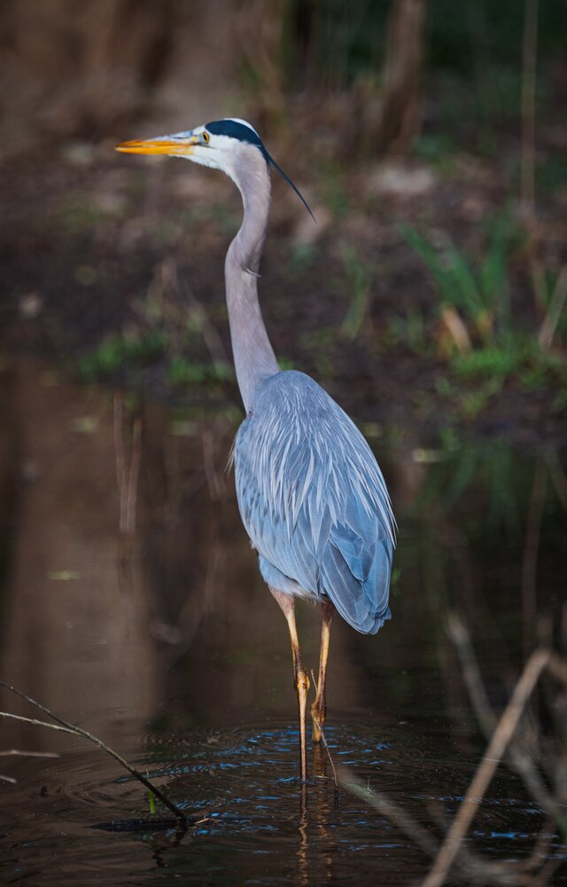

Fauna
Black Bear:
While exploring the forests in Star Valley, you may encounter a black bear. They are relatively easy to identify, being almost entirely black. And while the smallest bear species in America, they are the most widespread. They tend to avoid people and are the least likely bear to attack; it is always a good idea to carry bear spray as a deterrent for the exceptions. Besides their strength, they have some other fascinating quirks. For example, nearly every attempt to relocate them has failed because they are able to navigate back to their home range even with no familiar landmarks. They are also frequent tree climbers, a trait few other American bear possesses.
Pika:
An animal that looks like a rabbit with short, round ears and no tail. These can be found on the rocky sides of some of the canyons of Star Valley. They make their burrows in crevices of rock and spend their days preparing for winter. Since pikas do not hibernate, they need to store spare hay, grasses, and forbs in their burrows. It has been observed that they will sometimes move to a different burrow and ferry their stash to the new home. For an alarm call, they produce a high, whistling sound before rushing to their burrow.
Great Blue Heron
A bird rarely seen in Star Valley. They usually only appear while migrating before or after winter. Since there are many rivers and ponds, they are pretty easy to spot when the stop by. Most of their diet consists of fish which their bodies are well equipped to hunt. A heron’s primary hunting strategy is to stand in or near the water and to quickly grasp its prey when within reach. Sometimes, they dive from a perch or even mid- flight if the spot potential food.
